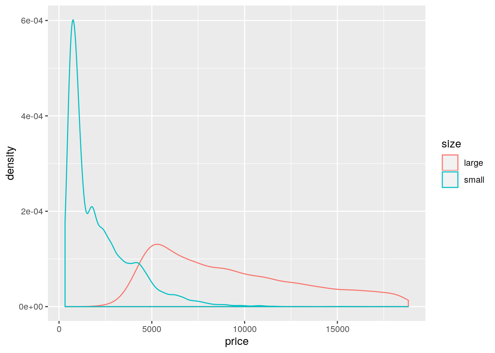
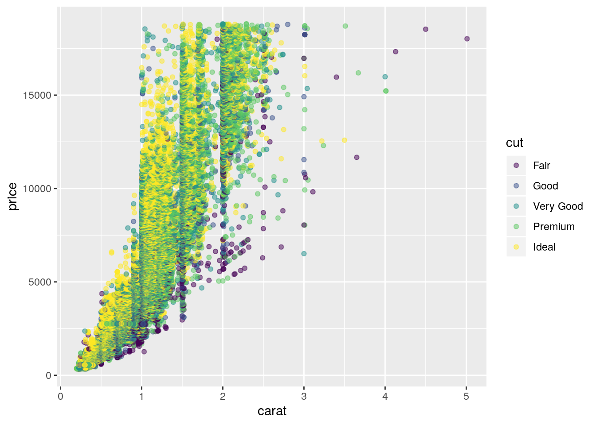

Exploratory data analysis
John Blischak
2019-09-27
Last updated: 2019-09-27
Checks: 7 0
Knit directory: wflow-r4ds/
This reproducible R Markdown analysis was created with workflowr (version 1.4.0). The Checks tab describes the reproducibility checks that were applied when the results were created. The Past versions tab lists the development history.
Great! Since the R Markdown file has been committed to the Git repository, you know the exact version of the code that produced these results.
Great job! The global environment was empty. Objects defined in the global environment can affect the analysis in your R Markdown file in unknown ways. For reproduciblity it’s best to always run the code in an empty environment.
The command set.seed(20190925) was run prior to running the code in the R Markdown file. Setting a seed ensures that any results that rely on randomness, e.g. subsampling or permutations, are reproducible.
Great job! Recording the operating system, R version, and package versions is critical for reproducibility.
Nice! There were no cached chunks for this analysis, so you can be confident that you successfully produced the results during this run.
Great job! Using relative paths to the files within your workflowr project makes it easier to run your code on other machines.
Great! You are using Git for version control. Tracking code development and connecting the code version to the results is critical for reproducibility. The version displayed above was the version of the Git repository at the time these results were generated.
Note that you need to be careful to ensure that all relevant files for the analysis have been committed to Git prior to generating the results (you can use wflow_publish or wflow_git_commit). workflowr only checks the R Markdown file, but you know if there are other scripts or data files that it depends on. Below is the status of the Git repository when the results were generated:
Ignored files:
Ignored: .Rhistory
Ignored: .Rproj.user/
Note that any generated files, e.g. HTML, png, CSS, etc., are not included in this status report because it is ok for generated content to have uncommitted changes.
These are the previous versions of the R Markdown and HTML files. If you’ve configured a remote Git repository (see ?wflow_git_remote), click on the hyperlinks in the table below to view them.
| File | Version | Author | Date | Message |
|---|---|---|---|---|
| html | 179b462 | John Blischak | 2019-09-27 | Build site. |
| Rmd | 874ad3b | John Blischak | 2019-09-27 | chp 5 exploratory data analysis |
Setup
library(nycflights13)
library(tidyverse)
data(diamonds)
library(ggstance)
library(lvplot)
library(ggbeeswarm)Variation
p. 90
Explore the distribution of each of the
x,y, andzvariables indiamonds. What do you learn? Think about a diamond and how you might decide which dimension is the length, width, and depth.
ggplot(data = diamonds, mapping = aes(x = x)) +
geom_histogram()`stat_bin()` using `bins = 30`. Pick better value with `binwidth`.
| Version | Author | Date |
|---|---|---|
| 179b462 | John Blischak | 2019-09-27 |
ggplot(data = diamonds, mapping = aes(x = y)) +
geom_histogram()`stat_bin()` using `bins = 30`. Pick better value with `binwidth`.
| Version | Author | Date |
|---|---|---|
| 179b462 | John Blischak | 2019-09-27 |
ggplot(data = diamonds, mapping = aes(x = z)) +
geom_histogram()`stat_bin()` using `bins = 30`. Pick better value with `binwidth`.
| Version | Author | Date |
|---|---|---|
| 179b462 | John Blischak | 2019-09-27 |
Explore the distribution of
price. Do you discover anything unusual or surprising? (Hint: Carefully think about thebinwidthand make sure you try a wide range of values.)
ggplot(data = diamonds, mapping = aes(x = price)) +
geom_histogram(binwidth = 10)
| Version | Author | Date |
|---|---|---|
| 179b462 | John Blischak | 2019-09-27 |
ggplot(data = diamonds, mapping = aes(x = price)) +
geom_histogram(binwidth = 100)
| Version | Author | Date |
|---|---|---|
| 179b462 | John Blischak | 2019-09-27 |
ggplot(data = diamonds, mapping = aes(x = price)) +
geom_histogram(binwidth = 1000)
| Version | Author | Date |
|---|---|---|
| 179b462 | John Blischak | 2019-09-27 |
How many diamonds are 0.99 carat? How many are 1 carat? What do you think is the cause of the difference?
diamonds %>%
filter(between(carat, 0.99, 1)) %>%
count(carat)# A tibble: 2 x 2
carat n
<dbl> <int>
1 0.99 23
2 1 1558Compare and contrast
coord_cartesian()vsxlim()orylim()when zooming in on a histogram. What happens if you leavebinwidthunset? What happens if you try and zoom so only half a bar shows?
Using coord_cartesian() zooms into the existing plot. Thus the bin width does not change. Using xlim() changes the binwidth because it changes the number of observations. Using ylim() removes data because the bars that go above 1000 are removed from the final plot.
ggplot(data = diamonds, mapping = aes(x = y)) +
geom_histogram()`stat_bin()` using `bins = 30`. Pick better value with `binwidth`.
| Version | Author | Date |
|---|---|---|
| 179b462 | John Blischak | 2019-09-27 |
ggplot(data = diamonds, mapping = aes(x = y)) +
geom_histogram() +
xlim(5, 10)`stat_bin()` using `bins = 30`. Pick better value with `binwidth`.Warning: Removed 17576 rows containing non-finite values (stat_bin).Warning: Removed 2 rows containing missing values (geom_bar).
| Version | Author | Date |
|---|---|---|
| 179b462 | John Blischak | 2019-09-27 |
ggplot(data = diamonds, mapping = aes(x = y)) +
geom_histogram() +
ylim(0, 1000)`stat_bin()` using `bins = 30`. Pick better value with `binwidth`.Warning: Removed 3 rows containing missing values (geom_bar).
| Version | Author | Date |
|---|---|---|
| 179b462 | John Blischak | 2019-09-27 |
ggplot(data = diamonds, mapping = aes(x = y)) +
geom_histogram() +
coord_cartesian(xlim = c(5, 10))`stat_bin()` using `bins = 30`. Pick better value with `binwidth`.
| Version | Author | Date |
|---|---|---|
| 179b462 | John Blischak | 2019-09-27 |
ggplot(data = diamonds, mapping = aes(x = y)) +
geom_histogram() +
coord_cartesian(ylim = c(0, 1000))`stat_bin()` using `bins = 30`. Pick better value with `binwidth`.
| Version | Author | Date |
|---|---|---|
| 179b462 | John Blischak | 2019-09-27 |
Missing values
p. 93
What happens to missing values in a histogram? What happens to missing values in a bar chart? Why is there a difference?
geom_histogram() removes missing values numeric variables:
d <- data.frame(x = c(1, 1, 2, 2, NA, 3))
ggplot(data = d, mapping = aes(x = x)) +
geom_histogram()`stat_bin()` using `bins = 30`. Pick better value with `binwidth`.Warning: Removed 1 rows containing non-finite values (stat_bin).
| Version | Author | Date |
|---|---|---|
| 179b462 | John Blischak | 2019-09-27 |
geom_bar() keeps missing values for non-numeric variables:
d <- data.frame(x = c("a", "a", "b", "b", NA, "c"))
ggplot(data = d, mapping = aes(x = x)) +
geom_bar()
| Version | Author | Date |
|---|---|---|
| 179b462 | John Blischak | 2019-09-27 |
An edge case is integers. They are treated as numeric and have missing values removed. To treat them as discrete, they need to be converted to a factor:
d <- data.frame(x = c(1, 1, 2, 2, NA, 3))
ggplot(data = d, mapping = aes(x = x)) +
geom_bar()Warning: Removed 1 rows containing non-finite values (stat_count).
| Version | Author | Date |
|---|---|---|
| 179b462 | John Blischak | 2019-09-27 |
d$x <- factor(d$x)
ggplot(data = d, mapping = aes(x = x)) +
geom_bar()
| Version | Author | Date |
|---|---|---|
| 179b462 | John Blischak | 2019-09-27 |
What does
na.rm = TRUEdo inmean()andsum()?
Missing values are removed prior to performing the calculation.
Covariation - A categorical and continuous variable
p. 99
Use what you’ve learned to improve the visualisation of the departure times of cancelled vs. non-cancelled flights.
Plot the density values:
nycflights13::flights %>%
mutate(
cancelled = is.na(dep_time),
sched_hour = sched_dep_time %/% 100,
sched_min = sched_dep_time %% 100,
sched_dep_time = sched_hour + sched_min / 60
) %>%
ggplot(mapping = aes(sched_dep_time)) +
geom_freqpoly(mapping = aes(y = ..density.., colour = cancelled), binwidth = 1/4)
| Version | Author | Date |
|---|---|---|
| 179b462 | John Blischak | 2019-09-27 |
I prefer the version with geom_density():
nycflights13::flights %>%
mutate(
cancelled = is.na(dep_time),
sched_hour = sched_dep_time %/% 100,
sched_min = sched_dep_time %% 100,
sched_dep_time = sched_hour + sched_min / 60
) %>%
ggplot(mapping = aes(sched_dep_time)) +
geom_density(mapping = aes(colour = cancelled), bw = 1/4)
| Version | Author | Date |
|---|---|---|
| 179b462 | John Blischak | 2019-09-27 |
What variable in the diamonds dataset is most important for predicting the price of a diamond? How is that variable correlated with cut? Why does the combination of those two relationships lead to lower quality diamonds being more expensive?
carat is the most important for predicting price.
summary(lm(price ~ ., data = diamonds))
Call:
lm(formula = price ~ ., data = diamonds)
Residuals:
Min 1Q Median 3Q Max
-21376.0 -592.4 -183.5 376.4 10694.2
Coefficients:
Estimate Std. Error t value Pr(>|t|)
(Intercept) 5753.762 396.630 14.507 < 2e-16 ***
carat 11256.978 48.628 231.494 < 2e-16 ***
cut.L 584.457 22.478 26.001 < 2e-16 ***
cut.Q -301.908 17.994 -16.778 < 2e-16 ***
cut.C 148.035 15.483 9.561 < 2e-16 ***
cut^4 -20.794 12.377 -1.680 0.09294 .
color.L -1952.160 17.342 -112.570 < 2e-16 ***
color.Q -672.054 15.777 -42.597 < 2e-16 ***
color.C -165.283 14.725 -11.225 < 2e-16 ***
color^4 38.195 13.527 2.824 0.00475 **
color^5 -95.793 12.776 -7.498 6.59e-14 ***
color^6 -48.466 11.614 -4.173 3.01e-05 ***
clarity.L 4097.431 30.259 135.414 < 2e-16 ***
clarity.Q -1925.004 28.227 -68.197 < 2e-16 ***
clarity.C 982.205 24.152 40.668 < 2e-16 ***
clarity^4 -364.918 19.285 -18.922 < 2e-16 ***
clarity^5 233.563 15.752 14.828 < 2e-16 ***
clarity^6 6.883 13.715 0.502 0.61575
clarity^7 90.640 12.103 7.489 7.06e-14 ***
depth -63.806 4.535 -14.071 < 2e-16 ***
table -26.474 2.912 -9.092 < 2e-16 ***
x -1008.261 32.898 -30.648 < 2e-16 ***
y 9.609 19.333 0.497 0.61918
z -50.119 33.486 -1.497 0.13448
---
Signif. codes: 0 '***' 0.001 '**' 0.01 '*' 0.05 '.' 0.1 ' ' 1
Residual standard error: 1130 on 53916 degrees of freedom
Multiple R-squared: 0.9198, Adjusted R-squared: 0.9198
F-statistic: 2.688e+04 on 23 and 53916 DF, p-value: < 2.2e-16Lower quality cuts have higher carat values.
ggplot(data = diamonds, mapping = aes(x = cut, y = carat)) +
geom_boxplot()
| Version | Author | Date |
|---|---|---|
| 179b462 | John Blischak | 2019-09-27 |
And since a higher carat gets a higher price, lower cuts tend to be more expensive on average.
ggplot(data = diamonds, mapping = aes(x = carat, y = price)) +
geom_point(alpha = 0.5) +
facet_wrap(~ cut)
| Version | Author | Date |
|---|---|---|
| 179b462 | John Blischak | 2019-09-27 |
Install the ggstance package, and create a horizontal boxplot. How does this compare to using
coord_flip()?
Have to switch x and y aesthetics:
ggplot(data = diamonds, mapping = aes(x = cut, y = carat)) +
geom_boxplot() +
coord_flip()
| Version | Author | Date |
|---|---|---|
| 179b462 | John Blischak | 2019-09-27 |
ggplot(data = diamonds, mapping = aes(x = carat, y = cut)) +
ggstance::geom_boxploth()
| Version | Author | Date |
|---|---|---|
| 179b462 | John Blischak | 2019-09-27 |
One problem with boxplots is that they were developed in an era of much smaller datasets and tend to display a prohibitively large number of “outlying values”. One approach to remedy this problem is the letter value plot. Install the lvplot package, and try using
geom_lv()to display the distribution of price vs cut. What do you learn? How do you interpret the plots?
ggplot(data = diamonds, mapping = aes(x = cut, y = price)) +
lvplot::geom_lv()
| Version | Author | Date |
|---|---|---|
| 179b462 | John Blischak | 2019-09-27 |
Compare and contrast
geom_violin()with a facettedgeom_histogram(), or a colouredgeom_freqpoly(). What are the pros and cons of each method?
ggplot(data = diamonds, mapping = aes(x = cut, y = price)) +
geom_violin()
| Version | Author | Date |
|---|---|---|
| 179b462 | John Blischak | 2019-09-27 |
ggplot(data = diamonds, mapping = aes(x = price)) +
geom_histogram() +
facet_wrap(~ cut)`stat_bin()` using `bins = 30`. Pick better value with `binwidth`.
| Version | Author | Date |
|---|---|---|
| 179b462 | John Blischak | 2019-09-27 |
ggplot(data = diamonds, mapping = aes(x = price)) +
geom_freqpoly(mapping = aes(color = cut))`stat_bin()` using `bins = 30`. Pick better value with `binwidth`.
| Version | Author | Date |
|---|---|---|
| 179b462 | John Blischak | 2019-09-27 |
If you have a small dataset, it’s sometimes useful to use
geom_jitter()to see the relationship between a continuous and categorical variable. The ggbeeswarm package provides a number of methods similar togeom_jitter(). List them and briefly describe what each one does.
ggplot(data = diamonds[sample(seq_len(nrow(diamonds)), 1000), ],
mapping = aes(x = cut, y = price)) +
ggbeeswarm::geom_beeswarm()
| Version | Author | Date |
|---|---|---|
| 179b462 | John Blischak | 2019-09-27 |
Covariation - Two categorical variables
p. 101
How could you rescale the count dataset above to more clearly show the distribution of cut within colour, or colour within cut?
Use a grouped mutate to calculate proportion of each cut within each color.
diamonds %>%
count(color, cut) %>%
group_by(color) %>%
mutate(prop = n / sum(n)) %>%
ggplot(mapping = aes(x = color, y = cut)) +
geom_tile(mapping = aes(fill = prop))
| Version | Author | Date |
|---|---|---|
| 179b462 | John Blischak | 2019-09-27 |
Use
geom_tile()together with dplyr to explore how average flight delays vary by destination and month of year. What makes the plot difficult to read? How could you improve it?
Only including non-cancelled flights with delayed arrivals.
flights %>%
filter(!is.na(dep_delay), !is.na(arr_delay), arr_delay > 0) %>%
select(dest, month, arr_delay) %>%
group_by(dest, month) %>%
summarize(delay = mean(arr_delay)) %>%
ggplot(mapping = aes(x = as.factor(month), y = dest)) +
geom_tile(mapping = aes(fill = delay))
| Version | Author | Date |
|---|---|---|
| 179b462 | John Blischak | 2019-09-27 |
Why is it slightly better to use
aes(x = color, y = cut)rather thanaes(x = cut, y = color)in the example above?
Putting longer variable values on y-axis ensure that the axis labels don’t overlap.
diamonds %>%
count(color, cut) %>%
ggplot(mapping = aes(x = color, y = cut)) +
geom_tile(mapping = aes(fill = n))
| Version | Author | Date |
|---|---|---|
| 179b462 | John Blischak | 2019-09-27 |
diamonds %>%
count(color, cut) %>%
ggplot(mapping = aes(x = cut, y = color)) +
geom_tile(mapping = aes(fill = n))
| Version | Author | Date |
|---|---|---|
| 179b462 | John Blischak | 2019-09-27 |
Covariation - Two continuous variables
smaller <- diamonds %>%
filter(carat < 3)
ggplot(data = smaller, mapping = aes(x = carat, y = price)) +
geom_boxplot(mapping = aes(group = cut_width(carat, 0.1)), varwidth = TRUE)
| Version | Author | Date |
|---|---|---|
| 179b462 | John Blischak | 2019-09-27 |
ggplot(data = smaller, mapping = aes(x = carat, y = price)) +
geom_boxplot(mapping = aes(group = cut_number(carat, 20)))
| Version | Author | Date |
|---|---|---|
| 179b462 | John Blischak | 2019-09-27 |
I think the above plot is confusing. The use of cut_number() puts a fairly equal number of observations in each bin. However, because carat is mapped to x, the width of the bin corresponds to the width on the x-axis, not the number of observations (as is done with varwidth = TRUE).
table(cut_number(diamonds$carat, 20))
[0.2,0.3] (0.3,0.31] (0.31,0.32] (0.32,0.35] (0.35,0.4] (0.4,0.42]
4203 2249 1840 2766 3333 2088
(0.42,0.5] (0.5,0.53] (0.53,0.6] (0.6,0.7] (0.7,0.73] (0.73,0.9]
2453 2653 2863 2714 2550 3890
(0.9,1] (1,1.01] (1.01,1.04] (1.04,1.13] (1.13,1.24] (1.24,1.51]
2836 2242 1881 2692 2820 3232
(1.51,1.7] (1.7,5.01]
1950 2685 p. 105
Instead of summarising the conditional distribution with a boxplot, you could use a frequency polygon. What do you need to consider when using
cut_width()vscut_number()? How does that impact a visualisation of the 2d distribution ofcaratandprice?
With cut_width(), the number of observations in each bin may vary substantially; whereas, with cut_number(), each bin will have a similar number of observations.
# cut_interval makes n groups with equal range
table(cut_interval(diamonds$price, n = 10))
[326,2.18e+03] (2.18e+03,4.03e+03] (4.03e+03,5.88e+03]
25335 9328 7393
(5.88e+03,7.72e+03] (7.72e+03,9.57e+03] (9.57e+03,1.14e+04]
3878 2364 1745
(1.14e+04,1.33e+04] (1.33e+04,1.51e+04] (1.51e+04,1.7e+04]
1306 1002 863
(1.7e+04,1.88e+04]
726 # cut_number makes n groups with (approximately) equal numbers of observations
table(cut_number(diamonds$price, n = 10))
[326,646] (646,837] (837,1.09e+03]
5411 5385 5396
(1.09e+03,1.7e+03] (1.7e+03,2.4e+03] (2.4e+03,3.46e+03]
5388 5405 5384
(3.46e+03,4.66e+03] (4.66e+03,6.3e+03] (6.3e+03,9.82e+03]
5394 5389 5395
(9.82e+03,1.88e+04]
5393 # cut_width makes groups of width width.
table(cut_width(diamonds$price, width = 1000))
[-500,500] (500,1.5e+03] (1.5e+03,2.5e+03]
1749 18261 7532
(2.5e+03,3.5e+03] (3.5e+03,4.5e+03] (4.5e+03,5.5e+03]
4958 4535 3950
(5.5e+03,6.5e+03] (6.5e+03,7.5e+03] (7.5e+03,8.5e+03]
2627 1946 1395
(8.5e+03,9.5e+03] (9.5e+03,1.05e+04] (1.05e+04,1.15e+04]
1253 1000 899
(1.15e+04,1.25e+04] (1.25e+04,1.35e+04] (1.35e+04,1.45e+04]
721 655 576
(1.45e+04,1.55e+04] (1.55e+04,1.65e+04] (1.65e+04,1.75e+04]
482 471 437
(1.75e+04,1.85e+04] (1.85e+04,1.95e+04]
391 102 ggplot(data = diamonds, mapping = aes(x = carat)) +
geom_freqpoly(mapping = aes(color = cut_width(price, width = 1000)))`stat_bin()` using `bins = 30`. Pick better value with `binwidth`.
| Version | Author | Date |
|---|---|---|
| 179b462 | John Blischak | 2019-09-27 |
ggplot(data = diamonds, mapping = aes(x = carat)) +
geom_freqpoly(mapping = aes(color = cut_number(price, n = 10)))`stat_bin()` using `bins = 30`. Pick better value with `binwidth`.
| Version | Author | Date |
|---|---|---|
| 179b462 | John Blischak | 2019-09-27 |
Visualise the distribution of carat, partitioned by price.
ggplot(data = diamonds, mapping = aes(x = price, y = carat)) +
geom_boxplot(mapping = aes(group = cut_width(price, 1000)))
| Version | Author | Date |
|---|---|---|
| 179b462 | John Blischak | 2019-09-27 |
How does the price distribution of very large diamonds compare to small diamonds? Is it as you expect, or does it surprise you?
diamonds %>%
mutate(volume = x * y * z, # naive, but not clear what they want
size = ifelse(volume > quantile(volume, 0.75), "large", "small")) %>%
ggplot(mapping = aes(x = price)) +
geom_density(mapping = aes(color = size))
| Version | Author | Date |
|---|---|---|
| 179b462 | John Blischak | 2019-09-27 |
Combine two of the techniques you’ve learned to visualise the combined distribution of cut, carat, and price.
ggplot(data = diamonds, mapping = aes(x = carat, y = price)) +
geom_point(mapping = aes(color = cut), alpha = 0.5)
| Version | Author | Date |
|---|---|---|
| 179b462 | John Blischak | 2019-09-27 |
- Two dimensional plots reveal outliers that are not visible in one dimensional plots. For example, some points in the plot below have an unusual combination of
xandyvalues, which makes the points outliers even though theirxandyvalues appear normal when examined separately.
ggplot(data = diamonds) +
geom_point(mapping = aes(x = x, y = y)) +
coord_cartesian(xlim = c(4, 11), ylim = c(4, 11))
| Version | Author | Date |
|---|---|---|
| 179b462 | John Blischak | 2019-09-27 |
Why is a scatterplot a better display than a binned plot for this case?
Because you want to highlight outliers. A binned plot would focus on the most densely overplotted areas.
sessionInfo()R version 3.6.1 (2019-07-05)
Platform: x86_64-pc-linux-gnu (64-bit)
Running under: Ubuntu 18.04.3 LTS
Matrix products: default
BLAS: /usr/lib/x86_64-linux-gnu/atlas/libblas.so.3.10.3
LAPACK: /usr/lib/x86_64-linux-gnu/atlas/liblapack.so.3.10.3
locale:
[1] LC_CTYPE=en_US.UTF-8 LC_NUMERIC=C
[3] LC_TIME=en_US.UTF-8 LC_COLLATE=en_US.UTF-8
[5] LC_MONETARY=en_US.UTF-8 LC_MESSAGES=en_US.UTF-8
[7] LC_PAPER=en_US.UTF-8 LC_NAME=C
[9] LC_ADDRESS=C LC_TELEPHONE=C
[11] LC_MEASUREMENT=en_US.UTF-8 LC_IDENTIFICATION=C
attached base packages:
[1] stats graphics grDevices utils datasets methods base
other attached packages:
[1] ggbeeswarm_0.6.0 lvplot_0.2.0 ggstance_0.3.3
[4] forcats_0.4.0 stringr_1.4.0 dplyr_0.8.3
[7] purrr_0.3.2 readr_1.3.1 tidyr_1.0.0
[10] tibble_2.1.3 ggplot2_3.2.1 tidyverse_1.2.1
[13] nycflights13_1.0.1
loaded via a namespace (and not attached):
[1] beeswarm_0.2.3 tidyselect_0.2.5 xfun_0.9
[4] haven_2.1.1 lattice_0.20-38 colorspace_1.4-1
[7] vctrs_0.2.0 generics_0.0.2 viridisLite_0.3.0
[10] htmltools_0.3.6 yaml_2.2.0 utf8_1.1.4
[13] rlang_0.4.0 pillar_1.4.2 glue_1.3.1
[16] withr_2.1.2 modelr_0.1.5 readxl_1.3.1
[19] lifecycle_0.1.0 munsell_0.5.0 gtable_0.3.0
[22] workflowr_1.4.0 cellranger_1.1.0 rvest_0.3.4
[25] evaluate_0.14 labeling_0.3 knitr_1.25
[28] vipor_0.4.5 fansi_0.4.0 broom_0.5.2
[31] Rcpp_1.0.2 backports_1.1.4 scales_1.0.0
[34] jsonlite_1.6 fs_1.3.1 hms_0.5.1
[37] digest_0.6.21 stringi_1.4.3 grid_3.6.1
[40] rprojroot_1.2 cli_1.1.0 tools_3.6.1
[43] magrittr_1.5 lazyeval_0.2.2 crayon_1.3.4
[46] whisker_0.4 pkgconfig_2.0.2 zeallot_0.1.0
[49] xml2_1.2.2 lubridate_1.7.4 assertthat_0.2.1
[52] rmarkdown_1.15 httr_1.4.1 rstudioapi_0.10
[55] R6_2.4.0 nlme_3.1-141 git2r_0.26.1.9000
[58] compiler_3.6.1